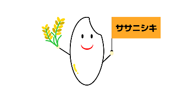
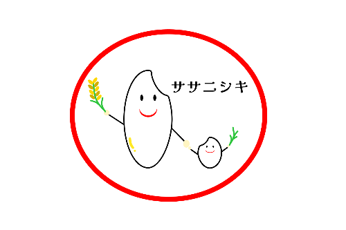

Works
Websites
| 制作物 | ：Restaurant EAUの架空HP |
|---|---|
| 種別 | ：個人制作 |
| 制作期間 | ：2週間（他作品と同時並行） |
| 使用技術 | ：HTML, CSS, Javascript, Figma, Canva |
【コメント】
爽やか且つ親しみやすさを感じられるように、また、レストラン名はEAU（= 水）であることから、淡い水色をベースにデザインにしました。
広々とした店内を連想できるようにコンテンツ間のマージンを十分にとるよう意識しました。
| 制作物 | ：犬情報サイト架空HP |
|---|---|
| 種別 | ：個人制作 |
| 制作期間 | ：2週間（他作品と同時並行） |
| 使用技術 | ：HTML, CSS, Javascript, Figma |
【コメント】
信頼感、落ち着きを感じる淡い茶色をベースにデザインにしました。
犬に関する情報をバランスよく、且つ文字の大きさを見やすく設定し、ブリーダーサイトへさり気なく誘導できるようボタンを設置しました。
Logos
| 制作物 | ：ササニシキ 新ロゴマーク 3パターン |
|---|---|
| 種別 | ：個人制作 |
| 制作期間 | ：各2時間（デザイン考案1h, 制作1h） |
| 使用技術 | ：Figma |
ササニシキ誕生60周年記念事業の新ロゴマーク募集に応募することを想定して制作しました。
https://www.sasanishiki-60th.com/contest/

【コメント】
一粒のお米にフラッグと稲穂の両方を持たせることで、いきいきとした立派なお米であるササニシキを表現しました。
ブランド名が目立つようにオレンジ色のフラッグを施しました。

【コメント】
お米の親子が手をつなぎ、子どもには小さな苗をもたせることで、次世代にも愛され続けられるようにという思いを込めました。
赤色の楕円で囲むことで目立つようにデザインしました。
【コメント】
お米の親子が手をつなぎ、子どもには小さな苗をもたせることで、次世代にも愛され続けられるようにという思いを込めました。
黄色い米フラッグで目立つようにデザインしました。
| 制作物 | ：「清流の国ぎふ」文化祭2024ロゴ 3パターン |
|---|---|
| 種別 | ：個人制作 |
| 制作期間 | ：各2時間（デザイン考案1h, 制作1h） |
| 使用技術 | ：Figma |
「清流の国ぎふ」文化祭のロゴマーク募集に応募することを想定して制作しました。 https://www.pref.gifu.lg.jp/page/225902.html
【コメント】
岐阜の伝統工芸品である岐阜提灯をベースにデザインしました。
青の波線は「清流」をイメージし、全体を見ると白川郷の屋根にも見えるように配置しました。
【コメント】
岐阜の伝統工芸品である岐阜提灯をベースにデザインしました。
白川郷の屋根部分を提灯の上部に加えることで、岐阜の文化を守り続けていけるようにという思いを込めました。
【コメント】
岐阜の伝統工芸品である岐阜提灯をベースにデザインしました。
大会コンセプトの1つである、「文化芸術とデジタル化の融合」をイメージしたロゴに仕上げました。